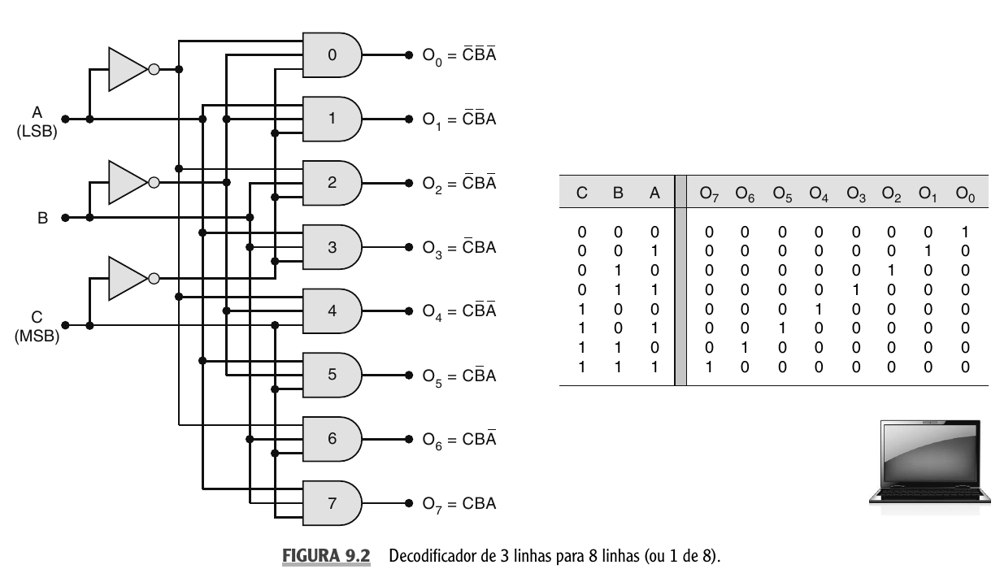
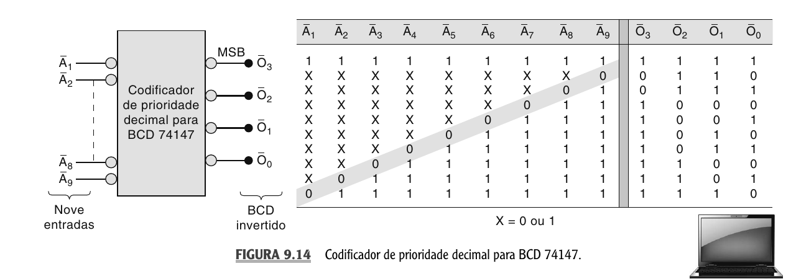
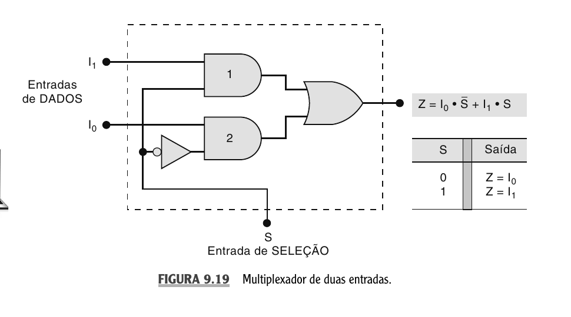
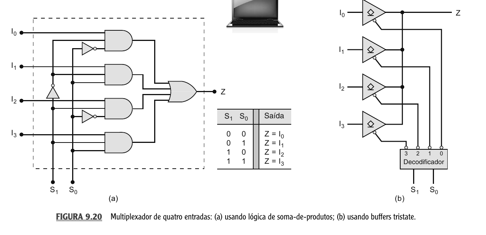
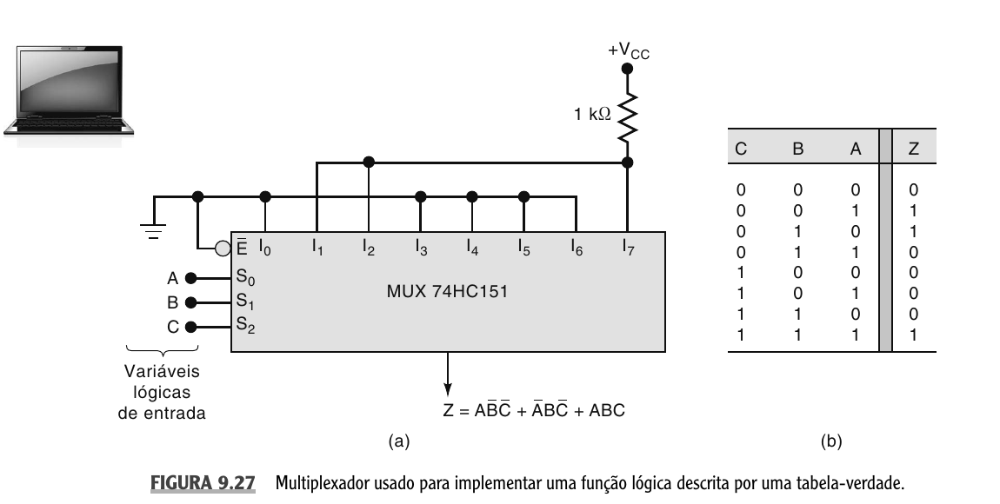
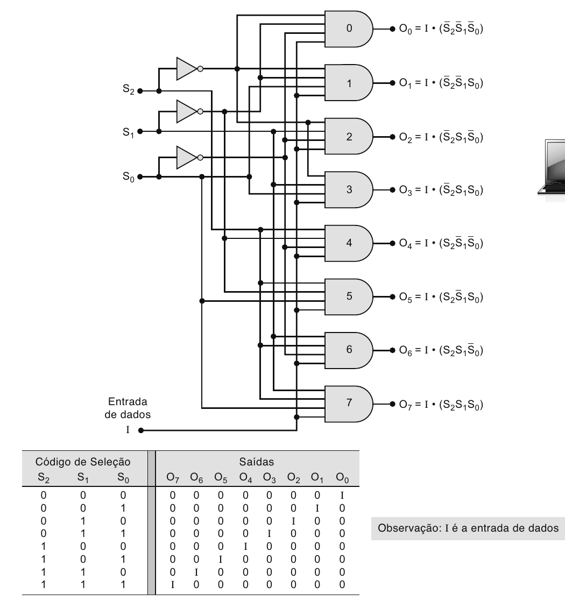
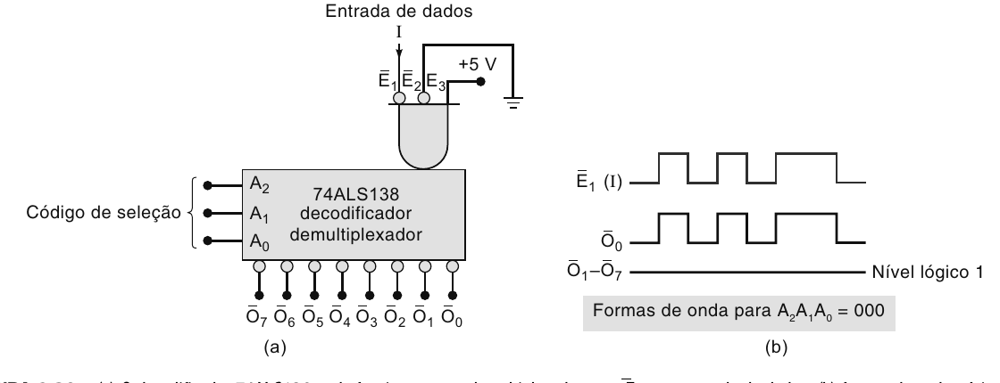

Introdução14.1
Nas aulas anteriores, você construiu circuitos combinacionais a partir de portas lógicas individuais , primeiro tabela-verdade, depois expressão, depois circuito. Agora vamos subir um nível de abstração.
Esta aula usa como base o Capítulo 9 de Sistemas Digitais: Princípios e Aplicações, de Ronald J. Tocci, Neal S. Widmer e Gregory L. Moss. A ideia central é a mudança de escala: em vez de montar tudo com portas SSI (Small-Scale Integration, poucas portas por chip) separadas, passamos a usar blocos MSI (Medium-Scale Integration, dezenas de portas por chip) prontos, como decodificadores, codificadores, multiplexadores e demultiplexadores. Esses blocos continuam sendo circuitos combinacionais , a saída depende apenas das entradas atuais , mas encapsulam funções comuns que aparecem repetidamente em sistemas digitais.
Um circuito MSI combinacional é um bloco funcional pronto para selecionar, codificar, rotear ou distribuir sinais digitais. Ele não guarda memória e evita que você redesenhe dezenas de portas sempre que precisar da mesma função.
A aula será organizada em torno de operações muito frequentes em sistemas digitais: decodificação e codificação, multiplexação e demultiplexação, comparação, conversão de código e barramentos de dados. Vamos focar nos quatro blocos principais: decodificadores, codificadores, multiplexadores e demultiplexadores. O ponto mais importante não é decorar CIs, mas entender o comportamento de cada bloco. Quando você reconhece a função, consegue usar tanto um CI TTL/CMOS clássico, como 74ALS138, 74HC151 ou 74HC147, quanto uma megafunção em uma ferramenta moderna de projeto digital.
O Que Muda Quando Usamos MSI14.2
Um circuito SSI, como uma porta AND ou OR, resolve uma operação lógica pequena. Um circuito MSI resolve uma função maior. Um decodificador 3 para 8, por exemplo, contém internamente inversores e portas AND organizadas para ativar uma única saída entre oito possíveis. Se você montasse esse decodificador manualmente, precisaria de inversores para obter as versões complementadas das entradas, uma porta AND para cada saída e conexões cuidadosas para garantir que cada saída correspondesse a uma combinação binária diferente. O MSI empacota essa lógica em um componente único, reduzindo fios, chances de erro e deixando o projeto mais legível.
Os CIs SSI e MSI foram por muito tempo os "tijolos e cimento" dos sistemas digitais. Mesmo com FPGAs e PLDs modernos, esses blocos continuam importantes porque revelam funções básicas usadas em projetos maiores.
Agora pense no papel desses blocos dentro de um sistema microprocessado: um endereço pode selecionar uma memória, um teclado pode ser codificado em BCD, um barramento pode receber dados de uma entre várias fontes, um único sinal pode ser distribuído para um entre vários destinos. Todos esses problemas são problemas de seleção e roteamento , e é por isso que decodificadores, codificadores, MUX e DEMUX aparecem tão cedo em projetos digitais reais.
Decodificadores14.3
Suponha que um sistema tenha 8 dispositivos e você não queira usar 8 fios de controle independentes para selecioná-los. Em vez disso, você usa 3 bits de endereço. Com 3 bits, existem $2^3 = 8$ combinações possíveis, e a ideia do decodificador é transformar cada combinação binária em uma linha de saída diferente.
Se a entrada binária vale $110_2$, qual saída deveria ser ativada em um decodificador 3 para 8? E por que só uma saída deve ficar ativa por vez?
Um decodificador recebe um código binário de entrada e ativa a saída correspondente ao valor desse código. No caso ideal, apenas uma saída fica ativa por vez. Em outras palavras, o circuito analisa as entradas, determina o número binário presente e ativa a saída correspondente; todas as outras saídas permanecem desativadas.
Um decodificador com $n$ entradas pode reconhecer $2^n$ combinações diferentes. Quando todas as combinações são usadas, ele pode ter $2^n$ saídas:
$$ \text{n entradas} \quad \Rightarrow \quad 2^n \text{ combinações} \quad \Rightarrow \quad 2^n \text{ saídas possíveis} $$
Alguns exemplos:
$$ \begin{array}{c|c|c} \text{Entradas} & \text{Combinações} & \text{Nome comum} \\ \hline 2 & 4 & \text{decodificador 2 para 4} \\ 3 & 8 & \text{decodificador 3 para 8 ou 1 de 8} \\ 4 & 16 & \text{decodificador 4 para 16 ou 1 de 16} \end{array} $$
O nome "1 de 8" significa exatamente isto: uma entre oito saídas fica ativa.
Antes de escrever a tabela, precisamos tomar cuidado com uma convenção prática: nem todo decodificador ativa a saída colocando-a em $1$. Alguns decodificadores têm saídas ativas em nível ALTO , a saída selecionada vai para $1$ e as demais ficam em $0$. Outros têm saídas ativas em nível BAIXO , a saída selecionada vai para $0$ e as demais ficam em $1$. Essa diferença aparece muito em CIs reais. Um decodificador 3 para 8 construído diretamente com portas AND costuma ter saídas ativas em nível ALTO; já o 74ALS138 usa saídas ativas em nível BAIXO.
Não basta olhar para a saída e perguntar se ela vale $0$ ou $1$. Você precisa saber se a saída é ativa em nível alto ou ativa em nível baixo. Em muitos CIs, a bolinha no símbolo indica inversão ou ativação em nível baixo.
Vamos usar a notação $CBA$, com $C$ como MSB e $A$ como LSB, e as saídas $O_0$ a $O_7$. Quando $CBA = 000$, a saída ativada é $O_0$; quando $CBA = 001$, é $O_1$; quando $CBA = 110$, é $O_6$; e quando $CBA = 111$, é $O_7$.
A figura abaixo mostra essa estrutura com portas AND e a tabela correspondente.

A tabela-verdade para saídas ativas em nível ALTO é:
$$ \begin{array}{c|c|c||c|c|c|c|c|c|c|c} C & B & A & O_7 & O_6 & O_5 & O_4 & O_3 & O_2 & O_1 & O_0 \\ \hline 0 & 0 & 0 & 0 & 0 & 0 & 0 & 0 & 0 & 0 & 1 \\ 0 & 0 & 1 & 0 & 0 & 0 & 0 & 0 & 0 & 1 & 0 \\ 0 & 1 & 0 & 0 & 0 & 0 & 0 & 0 & 1 & 0 & 0 \\ 0 & 1 & 1 & 0 & 0 & 0 & 0 & 1 & 0 & 0 & 0 \\ 1 & 0 & 0 & 0 & 0 & 0 & 1 & 0 & 0 & 0 & 0 \\ 1 & 0 & 1 & 0 & 0 & 1 & 0 & 0 & 0 & 0 & 0 \\ 1 & 1 & 0 & 0 & 1 & 0 & 0 & 0 & 0 & 0 & 0 \\ 1 & 1 & 1 & 1 & 0 & 0 & 0 & 0 & 0 & 0 & 0 \end{array} $$
As expressões de saída são simplesmente os mintermos das três variáveis , cada saída corresponde a uma linha da tabela.
Quando você estiver diante de um decodificador, não tente memorizar a tabela inteira. O procedimento é simples: primeiro identifique a ordem dos bits de entrada; depois converta o código binário para decimal; ative a saída com esse índice, mantendo as outras inativas; e por fim ajuste o valor elétrico conforme a saída seja ativa em nível alto ou baixo.
Entradas de Habilitação14.3.1
Muitos decodificadores reais têm entradas de habilitação, cujo papel é permitir ou bloquear o funcionamento do componente. Se o decodificador estiver habilitado, ele responde ao código de entrada; se estiver desabilitado, suas saídas ficam no estado inativo, independentemente do código.
Um exemplo clássico é o 74ALS138: um decodificador 3 para 8 com saídas ativas em nível BAIXO e três entradas de habilitação , $E_1$ ativa em nível BAIXO, $E_2$ ativa em nível BAIXO e $E_3$ ativa em nível ALTO.
Por que três entradas, e não apenas uma? A resposta está no cascateamento. Quando você precisa montar um decodificador maior com vários CIs iguais, o ideal é que o sinal que seleciona qual chip será habilitado não exija lógica externa adicional. Com duas entradas ativas em nível baixo e uma ativa em nível alto, você pode conectar sinais diferentes em cada uma delas sem precisar de inversores extras. Por exemplo, ao cascatear dois 74ALS138, você liga o bit de seleção mais significativo diretamente em $E_3$ de um chip e em $E_1$ do outro, aproveitando que um responde a nível alto e o outro a nível baixo. As entradas não usadas são simplesmente amarradas no valor que as mantém no estado ativo.
Para o CI ficar habilitado, a condição precisa ser:
$$ E_1 = 0, \qquad E_2 = 0, \qquad E_3 = 1 $$
Se qualquer uma dessas condições falhar, todas as saídas permanecem inativas em nível ALTO.
Um 74ALS138 recebe $E_3=1$, $E_2=0$, $E_1=0$ e $A_2A_1A_0=011$. Qual saída é ativada?
Verificamos a habilitação: $E_1=0$, $E_2=0$, $E_3=1$, todas as entradas no estado ativo. Convertendo $011_2 = 3_{10}$, a saída selecionada é $O_3$. Como o CI tem saídas ativas em nível BAIXO, $O_3 = 0$ e as demais saídas ficam em nível ALTO.
Cascateamento de Decodificadores14.3.2
Um decodificador maior pode ser montado com vários decodificadores menores. Por exemplo, quatro CIs 74ALS138 podem formar um decodificador 1 de 32. A ideia é separar os bits de entrada em dois grupos: os bits menos significativos escolhem uma saída dentro do CI habilitado; os bits mais significativos escolhem qual CI será habilitado.
Para um decodificador 1 de 32, temos 5 bits de entrada, $A_4A_3A_2A_1A_0$. Os bits $A_2A_1A_0$ entram em todos os decodificadores 3 para 8 e escolhem uma das 8 saídas internas. Já os bits $A_4A_3$ determinam qual dos quatro CIs fica habilitado:
$$ \begin{array}{c|c|c} A_4A_3 & \text{CI habilitado} & \text{faixa de saídas} \\ \hline 00 & Z_1 & O_0 \text{ a } O_7 \\ 01 & Z_2 & O_8 \text{ a } O_{15} \\ 10 & Z_3 & O_{16} \text{ a } O_{23} \\ 11 & Z_4 & O_{24} \text{ a } O_{31} \end{array} $$
O raciocínio geral do cascateamento é sempre o mesmo: os bits mais altos escolhem o bloco e os bits mais baixos escolhem a saída dentro dele.
Decodificadores e suas Aplicações14.3.3
Nem todo decodificador usa todas as $2^n$ combinações possíveis. Um decodificador BCD para decimal, como o 7442, recebe 4 bits, mas ativa apenas uma entre 10 saídas , porque o BCD usa apenas os códigos de $0000$ a $1001$. Os códigos de $1010$ a $1111$ não são válidos em BCD e, em muitos decodificadores desse tipo, quando um desses códigos inválidos é aplicado, nenhuma saída é ativada.
Também são muito comuns os decodificadores/drivers BCD para 7 segmentos. Eles recebem um dígito BCD e acionam os segmentos corretos de um display. Essa aplicação é mais rica que um decodificador simples, porque cada saída de segmento pode estar ativa para vários dígitos diferentes , por exemplo, o segmento $a$ acende para $0$, $2$, $3$, $5$, $6$, $7$, $8$ e $9$. Ainda assim, a ideia central é a mesma: converter um código de entrada em sinais de saída úteis para um dispositivo.
Uma aplicação muito importante aparece em sistemas de memória. O processador coloca um endereço no barramento e o decodificador usa parte desse endereço para selecionar uma posição ou um CI de memória. Em termos práticos, os bits mais significativos do endereço selecionam o chip, os bits menos significativos selecionam a posição interna dentro do chip, e o sinal de habilitação impede que chips não selecionados respondam. Essa ideia voltará quando estudarmos barramentos e memória. Por enquanto, guarde a estrutura: endereço entra, uma linha de seleção sai.
Codificadores14.4
O Problema da Codificação14.4.1
O codificador faz o caminho inverso do decodificador: em vez de receber um código binário e ativar uma saída, ele recebe uma linha de entrada ativa e gera o código binário correspondente. Em outras palavras, o codificador pode ser lido como o oposto da decodificação , um circuito com certo número de linhas de entrada, em que somente uma é ativada por vez, produzindo um código de saída de $N$ bits.
Se um teclado decimal tem 10 teclas, faria sentido levar 10 fios até o processador? Ou seria melhor gerar um código binário que represente a tecla pressionada?
Um codificador octal para binário recebe 8 entradas e gera 3 saídas. Se a entrada 5 estiver ativa, a saída deve ser $101_2$. Em forma geral, a entrada ativa 0 produz $000$, a entrada 1 produz $001$, e assim por diante até a entrada 7 produzindo $111$.
Em muitos CIs, as entradas são ativas em nível BAIXO, o que significa que a entrada pressionada ou selecionada aparece como $0$ enquanto as demais ficam em $1$. Essa convenção é muito comum em teclados com resistores de pull-up: enquanto a tecla está solta, a entrada fica em nível ALTO; quando a tecla é pressionada, ela é conectada ao terra e vai para nível BAIXO.
O codificador simples só funciona corretamente quando uma única entrada está ativa. Se duas entradas forem ativadas ao mesmo tempo, a saída pode virar um código sem significado claro. Esse problema aparece claramente em um codificador octal para binário: se $A_3$ e $A_5$ forem simultaneamente ativadas em nível BAIXO, a saída pode se tornar $111$, que não representa adequadamente nenhuma das duas entradas ativas.
Não assuma que um codificador simples "escolhe" uma das entradas. Se ele não tiver lógica de prioridade, duas entradas ativas podem produzir uma saída ambígua.
Para resolver o conflito de múltiplas entradas ativas, usamos um codificador de prioridade. Nesse circuito, se duas ou mais entradas forem ativadas, a saída representa a entrada de maior prioridade , na maioria dos casos, a maior prioridade fica com a entrada de maior número. Por exemplo, se $A_3$ e $A_5$ forem ativadas, a saída representa $A_5$; se $A_2$, $A_6$ e $A_0$ forem ativadas, a saída representa $A_6$. Os CIs 74148, 74LS148 e 74HC148 são exemplos clássicos de codificadores de prioridade octal para binário.
O 74147 é um codificador de prioridade decimal para BCD, com entradas ativas em nível BAIXO para os dígitos de 1 a 9 e saída em código BCD invertido.

Há três detalhes importantes na leitura desse CI: as entradas são ativas em nível BAIXO, as saídas são BCD invertido e não há entrada $A_0$, porque a ausência de qualquer entrada ativa de 1 a 9 já representa o decimal 0. Se nenhuma tecla estiver ativa, as saídas ficam em $1111$; passando por inversores, isso vira $0000$, o BCD normal para 0. Se a entrada $A_7$ estiver ativa em nível BAIXO, a saída invertida será $1000$, cujo inverso é $0111$, o BCD normal para 7.
No 74147, as entradas $A_5$, $A_7$ e $A_3$ estão em nível BAIXO e todas as demais estão em nível ALTO. Qual dígito é codificado?
Como o 74147 é um codificador de prioridade, vence a entrada ativa de maior número: $A_7$. O dígito codificado é 7 e, como o CI gera BCD invertido, a saída será $\overline{0111} = 1000$. Esse é o raciocínio essencial para interpretar codificadores de prioridade com saídas invertidas.
Codificador de Chaves14.4.2
Uma aplicação direta é o codificador de chaves. Imagine um teclado de calculadora com teclas de 0 a 9: quando uma tecla é pressionada, o circuito precisa transformar essa ação em um código BCD. O 74147 pode ser usado nessa aplicação com as entradas normalmente em nível ALTO por resistores de pull-up. Quando uma tecla é pressionada, a entrada correspondente vai para nível BAIXO, o codificador gera o código BCD invertido e inversores externos podem transformá-lo em BCD normal. Esse circuito também explica por que a prioridade importa: se duas teclas forem pressionadas simultaneamente, o código gerado será o da tecla de maior número.
Multiplexadores14.5
Um multiplexador, ou MUX, seleciona uma entre várias entradas de dados e a transfere para uma única saída. Uma analogia simples é um sistema de som que seleciona entre MP3 player, rádio, TV ou DVD: a chave escolhe uma fonte e envia o sinal ao amplificador. O MUX faz isso digitalmente.
Se você tem 8 fontes de dados e quer escolher uma delas, quantos bits de seleção são necessários?
Com $n$ entradas de seleção, um MUX consegue escolher uma entre $2^n$ entradas de dados , um seletor cobre 2 entradas, dois seletores cobrem 4, três seletores cobrem 8 e quatro seletores cobrem 16.
O MUX 2 para 1 tem duas entradas de dados, $I_0$ e $I_1$, uma entrada de seleção $S$ e uma saída $Z$.

A tabela funcional e a expressão são:
$$ \begin{array}{c||c} S & Z \\ \hline 0 & I_0 \\ 1 & I_1 \end{array} \qquad Z = I_0\overline{S} + I_1S $$
Avaliando a expressão: quando $S=0$, temos $Z = I_0 \cdot 1 + I_1 \cdot 0 = I_0$; quando $S=1$, temos $Z = I_0 \cdot 0 + I_1 \cdot 1 = I_1$. O seletor não é o dado , ele decide qual dado passa.
O MUX 4 para 1 usa dois seletores, $S_1$ e $S_0$, para escolher entre $I_0$, $I_1$, $I_2$ e $I_3$.

Essa função pode ser implementada com lógica de soma de produtos (portas AND e OR) ou com buffers tristate controlados por um decodificador. A segunda forma é útil porque o decodificador garante que apenas um buffer seja habilitado por vez.
O 74ALS151 ou 74HC151 é um MUX de oito entradas, com entradas de dados $I_0$ a $I_7$, seletores $S_2S_1S_0$, entrada de habilitação $E$, saída normal $Z$ e saída invertida $\overline{Z}$. Quando $E=0$, o MUX está habilitado e as entradas de seleção escolhem uma das entradas de dados; quando $E=1$, o MUX fica desabilitado.
Um 74HC151 recebe $S_2S_1S_0 = 101$, $E=0$, e as entradas de dados são $I_0=0$, $I_1=1$, $I_2=0$, $I_3=1$, $I_4=0$, $I_5=1$, $I_6=1$, $I_7=0$. Determine $Z$.
Com $E=0$, o MUX está habilitado. Convertendo o seletor, $101_2 = 5_{10}$, portanto a entrada escolhida é $I_5$. Como $I_5=1$, temos $Z=1$.
Dois CIs 74HC151 podem ser combinados para formar um MUX de 16 entradas. A estratégia é hierárquica e muito parecida com o cascateamento de decodificadores: cada 74HC151 seleciona uma entre 8 entradas; os seletores $S_2S_1S_0$ vão para ambos os CIs; o seletor mais significativo $S_3$ decide qual dos dois CIs fica habilitado; as saídas são combinadas para formar uma saída única. Bits menos significativos escolhem dentro do bloco; bit mais significativo escolhe o bloco.
Multiplexadores aparecem em várias aplicações importantes: seleção de dados, roteamento de dados, sequenciamento de operações, conversão paralelo-série, geração de formas de onda e implementação de funções lógicas.
Um MUX pode escolher qual fonte de dados será enviada a um destino. Uma aplicação típica usa dois contadores BCD e um único conjunto de decodificadores/drivers e displays: em vez de duplicar os displays, o sistema usa MUXes para escolher qual contador será exibido. Isso economiza hardware, fios e consumo de potência, mas impõe uma limitação , apenas um contador é mostrado por vez. Essa troca é comum em projeto digital: muitas vezes aceitamos multiplexar no tempo para economizar hardware físico.
Muitos sistemas processam dados em paralelo, mas transmitem em série para economizar fios. Uma conversão paralelo-série pode ser feita usando um MUX de 8 entradas e um contador módulo 8. Os 8 bits paralelos entram em $I_0$ a $I_7$, um contador gera $S_2S_1S_0$, e a cada pulso de clock o seletor avança, colocando na saída $X_0$, depois $X_1$, até $X_7$. A saída vira uma sequência serial.
Um dos usos mais interessantes do MUX é implementar uma função lógica diretamente da tabela-verdade. A ideia é usar as variáveis da função como entradas de seleção e, para cada linha da tabela-verdade, ligar a entrada correspondente do MUX em $0$ ou $1$ conforme a saída desejada. A saída do MUX será a função.

No exemplo da figura, as variáveis $A$, $B$ e $C$ são conectadas aos seletores, e as entradas de dados do MUX recebem constantes $0$ ou $1$ conforme a saída desejada para cada combinação.
Demultiplexadores14.6
O demultiplexador faz a operação inversa do MUX: ele recebe uma única entrada de dados e distribui esse sinal para uma entre várias saídas. O DEMUX pode ser lido como uma chave de várias posições , o código de seleção determina para qual saída o dado será transmitido. Enquanto o MUX concentra, o DEMUX distribui.
Se o MUX escolhe uma entrada entre muitas e leva para uma saída, o que o DEMUX deve fazer com uma entrada única e várias saídas?
Um DEMUX 1 para 8 tem uma entrada de dados $I$, três seletores $S_2S_1S_0$ e oito saídas $O_0$ a $O_7$.

A tabela funcional mostra que, para cada combinação dos seletores, a entrada $I$ aparece em apenas uma das saídas:
$$ \begin{array}{c|c|c||c|c|c|c|c|c|c|c} S_2 & S_1 & S_0 & O_7 & O_6 & O_5 & O_4 & O_3 & O_2 & O_1 & O_0 \\ \hline 0 & 0 & 0 & 0 & 0 & 0 & 0 & 0 & 0 & 0 & I \\ 0 & 0 & 1 & 0 & 0 & 0 & 0 & 0 & 0 & I & 0 \\ 0 & 1 & 0 & 0 & 0 & 0 & 0 & 0 & I & 0 & 0 \\ 0 & 1 & 1 & 0 & 0 & 0 & 0 & I & 0 & 0 & 0 \\ 1 & 0 & 0 & 0 & 0 & 0 & I & 0 & 0 & 0 & 0 \\ 1 & 0 & 1 & 0 & 0 & I & 0 & 0 & 0 & 0 & 0 \\ 1 & 1 & 0 & 0 & I & 0 & 0 & 0 & 0 & 0 & 0 \\ 1 & 1 & 1 & I & 0 & 0 & 0 & 0 & 0 & 0 & 0 \end{array} $$
As expressões seguem o mesmo padrão do decodificador, mas cada uma é multiplicada pela entrada de dados $I$:
$$ \begin{aligned} O_0 &= I\,\overline{S_2}\,\overline{S_1}\,\overline{S_0} & O_1 &= I\,\overline{S_2}\,\overline{S_1}\,S_0 & O_2 &= I\,\overline{S_2}\,S_1\,\overline{S_0} & O_3 &= I\,\overline{S_2}\,S_1\,S_0 \\ O_4 &= I\,S_2\,\overline{S_1}\,\overline{S_0} & O_5 &= I\,S_2\,\overline{S_1}\,S_0 & O_6 &= I\,S_2\,S_1\,\overline{S_0} & O_7 &= I\,S_2\,S_1\,S_0 \end{aligned} $$
Há uma relação importante aqui: o circuito de um DEMUX é muito parecido com o circuito de um decodificador. A única diferença é que o DEMUX acrescenta a entrada de dados em cada porta. Por isso, um decodificador com entrada de habilitação pode funcionar como DEMUX. No 74ALS138, por exemplo, uma das entradas de habilitação pode receber o dado $I$, enquanto as entradas $A_2A_1A_0$ funcionam como seletores. Como o 74ALS138 tem saídas ativas em nível BAIXO, a leitura precisa ser cuidadosa: quando a saída $O_0$ é selecionada, ela acompanha a entrada de dados aplicada em $E_1$, mas considerando a lógica ativa em nível baixo do componente.

Um DEMUX 1 para 8 com saídas ativas em nível ALTO recebe $S_2S_1S_0=101$ e $I=1$. Determine as saídas.
O seletor é $101_2 = 5_{10}$, portanto a saída escolhida é $O_5$. Como $I=1$, temos $O_5=1$ e todas as demais saídas ficam em $0$. Esse exemplo mostra uma diferença importante entre decoder e DEMUX: no decoder, a saída selecionada ativa independentemente de um dado externo; no DEMUX, a saída selecionada simplesmente recebe o valor do dado.
Comparação Entre Decoder, Encoder, MUX e DEMUX14.7
Esses quatro blocos se parecem porque todos lidam com seleção, mas resolvem problemas diferentes. A tabela abaixo organiza o que cada um faz:
| Bloco | Entrada principal | Saída principal | Pergunta que responde |
|---|---|---|---|
| Decoder | código binário | uma linha ativa | qual saída corresponde a este código? |
| Encoder | uma linha ativa | código binário | qual entrada foi ativada? |
| MUX | vários dados | um dado escolhido | qual entrada deve ir para a saída? |
| DEMUX | um dado | uma saída recebe o dado | para qual saída o dado deve ir? |
Decoder transforma código em linha. Encoder transforma linha em código. MUX escolhe uma entrada de dados. DEMUX distribui uma entrada de dados.
Quando um problema pedir um desses blocos, comece pela pergunta certa. Se o problema diz "tenho um código e quero ativar uma saída", use decoder. Se diz "tenho uma linha ativa e quero saber seu número", use encoder. Se diz "tenho várias fontes e quero escolher uma para a saída", use MUX. Se diz "tenho um sinal e quero enviá-lo para um destino selecionado", use DEMUX.
Depois dimensione os seletores: o número de seletores é $\log_2(\text{número de opções})$. Se o número de opções não for potência de 2, você ainda usa bits suficientes para cobrir todas as opções, mas alguns códigos ficam sem uso.
Um processador precisa escolher uma entre 16 fontes de dados para colocar em uma entrada da ALU. Qual bloco é adequado e quantos seletores são necessários?
O sistema tem várias fontes de dados e uma saída única , isso é multiplexação. Como $2^4 = 16$, é necessário um MUX 16 para 1 com 4 bits de seleção.
Questões14.8
1. Em um decodificador 3 para 8 com saídas ativas em nível ALTO, determine as saídas para $CBA=101$. Repita para saídas ativas em nível BAIXO.
2. O 74ALS138 tem $E_1$ e $E_2$ ativos em nível BAIXO e $E_3$ ativo em nível ALTO. Diga se ele está habilitado para $E_1=0$, $E_2=1$ e $E_3=1$.
3. Usando a lógica de cascateamento, determine a saída ativada em um decodificador 1 de 32 para $A_4A_3A_2A_1A_0=10011$.
4. Explique por que um decodificador BCD para decimal usa apenas 10 das 16 combinações possíveis de uma entrada de 4 bits.
5. Qual é a diferença entre um codificador simples e um codificador de prioridade?
6. Em um codificador de prioridade decimal para BCD, as entradas $A_4$, $A_8$ e $A_6$ estão ativas. Qual dígito deve ser codificado? Por que o 74147 não precisa de uma entrada $A_0$?
7. Escreva a expressão de saída de um MUX 2 para 1 e determine qual entrada é selecionada em um MUX 8 para 1 quando $S_2S_1S_0=011$.
8. Explique como um MUX 8 para 1 pode implementar uma função de três variáveis a partir de uma tabela-verdade.
9. Em um DEMUX 1 para 8 com saídas ativas em nível ALTO, determine as saídas para $S_2S_1S_0=010$ e $I=1$. Explique por que um decodificador com entrada de habilitação pode ser usado como DEMUX.
10. Por que o 74ALS138 possui três entradas de habilitação em vez de apenas uma?
1. Com saídas ativas em nível ALTO, $101_2=5_{10}$, logo $O_5=1$ e as demais valem $0$. Com saídas ativas em nível BAIXO, $O_5=0$ e as demais ficam em $1$. O que muda é a convenção de ativação, não a saída escolhida.
2. Não está habilitado, porque $E_2$ deveria estar em $0$ para ficar ativo. Como $E_2=1$, todas as saídas permanecem inativas.
3. Separe os bits: $A_4A_3=10$ habilita o terceiro bloco, que cobre $O_{16}$ a $O_{23}$. Os bits $A_2A_1A_0=011$ selecionam a saída interna 3. Logo, a saída ativada é $O_{19}$.
4. Porque BCD representa apenas os dígitos decimais de 0 a 9, correspondentes a $0000$ até $1001$. As combinações $1010$ a $1111$ não são códigos BCD válidos.
5. O codificador simples pressupõe que apenas uma entrada esteja ativa por vez e pode produzir saída ambígua quando duas ou mais entradas são ativadas. O codificador de prioridade resolve esse conflito escolhendo a entrada de maior prioridade.
6. A entrada de maior prioridade é $A_8$, portanto o dígito codificado é 8. O 74147 não precisa de entrada $A_0$ porque a ausência de qualquer entrada ativa de 1 a 9 já representa o decimal 0.
7. A expressão do MUX 2 para 1 é $Z = I_0\overline{S} + I_1S$. No MUX 8 para 1, com $S_2S_1S_0=011$, temos $011_2=3_{10}$, portanto a entrada enviada à saída é $I_3$.
8. Use as três variáveis como seletores. Cada entrada de dados do MUX recebe $0$ ou $1$ conforme a linha correspondente da tabela-verdade. Assim, quando os seletores escolhem uma linha, a saída do MUX reproduz o valor da função naquela linha.
9. Com $010_2=2_{10}$, a saída selecionada é $O_2$. Como $I=1$ e as saídas são ativas em nível ALTO, $O_2=1$ e as demais valem $0$. Um decodificador com enable pode funcionar como DEMUX porque as entradas de seleção escolhem a saída e a entrada de habilitação transporta o dado, que aparece apenas na saída selecionada.
10. Para facilitar o cascateamento sem lógica externa adicional. Com entradas de polaridades diferentes, você conecta bits de seleção diretamente nos enables de cada chip, sem precisar de inversores.
Próximos passos14.9
Nesta aula, você viu quatro blocos MSI fundamentais: decodificadores, codificadores, multiplexadores e demultiplexadores. Todos são combinacionais, mas cada um resolve um problema diferente de seleção, codificação ou roteamento. Você aprendeu a ler tabelas-verdade de cada bloco, a interpretar sinais ativos em nível alto ou baixo, a lidar com entradas de habilitação e a montar blocos maiores por cascateamento.
No próximo capítulo, vamos entrar em lógica sequencial. A diferença será essencial: nos circuitos sequenciais, a saída não depende apenas das entradas atuais, mas também de estado armazenado. Esse caminho começa pelos latches e flip-flops.